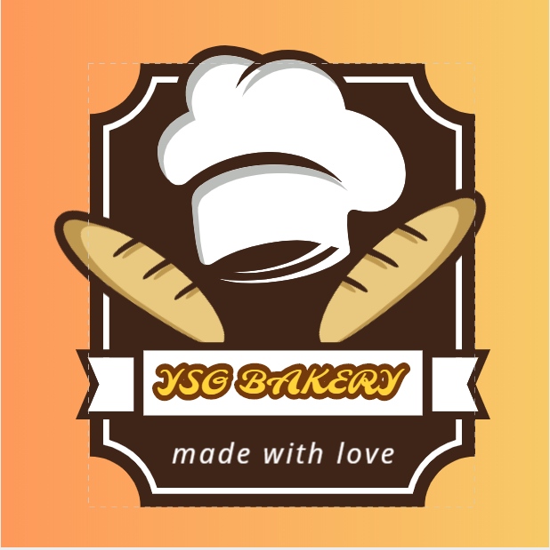
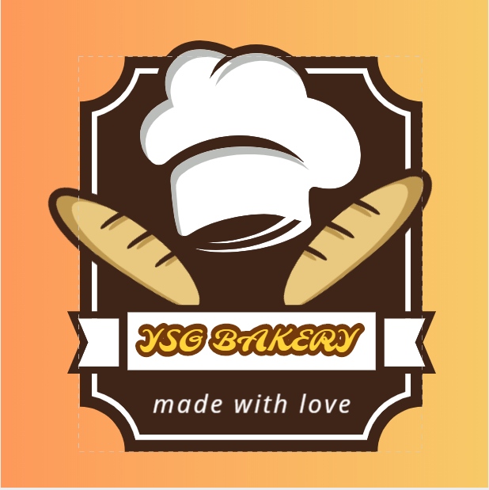

YSG Bakers came from a great idea of serving some unique simple menu with good taste to customers.
We worked on our menu and made unique pizzas, juicy burgers, specials design cakes concepts, and various other cuisine served under a roof with a unique ambiance.
We are always proud to be made in India and local to serve in the different corners of the city Hyderabad.
We do serve some online platforms such as Swiggy, Zomato and etc.
we often do our audits on our food quality and service to ensure customer satisfaction. We try to catch up with the current trends and make revisions on our menu when needed.
We are committed to helping our customers with our food. We are working round the clock to fulfill our customer needs and enjoy our warm hospitality.